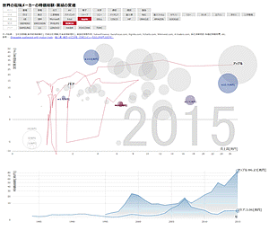
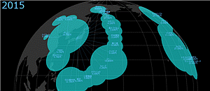
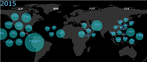

1981年度～2015年度（予測）の業績（売上高、営業利益率）と時価総額を年代ごとに可視化しました。
各年度ごとに各企業にフォーカスを当て、イベントとともに表示するシナリオモードはこちら。

ヒストリカル・バブルチャートと同様に、総資産を地図上（本社所在地）に可視化しました。表示上、密集して見ずらい場合は、引き出し線で近傍に表示しています。 上部のボタンで、表示方法を3D地図、2D地図、エリア別、産業タイプ別に変更できます。


- 海外企業と正しく比較できるよう、当時の為替レートを用いて日本円に換算しています。
-
2015年度の業績は2015年1月現在まだ未発表なため、各社発表の予測値（ない場合には前年度値）を採用しています。
-
時価総額は年間調整後終値×現在の発行済み株式数としています。
- 最新性、正確性を保証するものではありません。
- データ出典・引用元を掲載していますが、権利者からの利用許諾を保証するものではありません。
- 紹介した内容に基づき実行した事で被った損害や不利益等に対して、作者は一切責任を負いません。
ご要望・お問い合わせ等は ishihara.jp＠gmail.com までご連絡下さい。